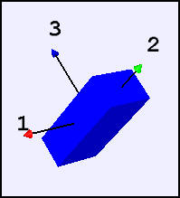
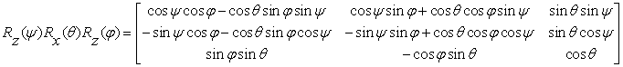
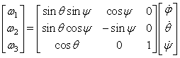

A sequence of three rotations orients a body in space.
The Euler Angle Demonstration shows how to specify the orientation of a three-dimensional object using a a sequence of rotations about three pre-chosen axes. The rotation angles are known as Euler angles and all possible orientations of an object can be represented using these angles.
The simulation starts with the body frame 123-axis coordinate system aligned with the world's xyz-Cartesian coordinate system. The first rotation is about the body frame's z axis by an angle φ. This angle is called the angle of precession. The second rotation is about the new x axis through an angle θ. This angle is called the angle of nutation. The final rotation is about the new z axis through an angle ψ. This angle is called the spin angle. This notation is typically used in physics textbooks because it is convenient for the description of spinning tops but other definitions of Euler angles are possible. Multiplying the three rotation matrices gives the final transformation matrix in terms of Euler angles.

To use Euler angles as differential equation state variables in Euler's equations of motion, we must calculate their rate as a function of the angular velocity vector ω=(ω1, ω2, ω3). We use φ, θ, and ψ to keep track of the principal axes fixed to a body and express the angular angular velocity components in terms of these angles.

This matrix is singular when sin(θ) is zero so obtaining numerical solutions for arbitrary initial conditions is difficult and analytical solutions are known only for limiting cases, such as large spin.
The following EJS models are described in Chapter 17 of the EJS adaptation of An Introduction to Computer Simulation Methods available in the ComPADRE digital library.
The Euler Angle Demonstration was developed by Wolfgang Christian using the Easy Java Simulations (EJS) modeling tool version 4.3. You can examine and modify the model for this simulation if you have EJS installed by right-clicking within the program and selecting "Open Ejs Model" from the pop-up menu.
Information about EJS is available at: <http://www.um.es/fem/Ejs/> and in the OSP ComPADRE collection <http://www.compadre.org/OSP/>.